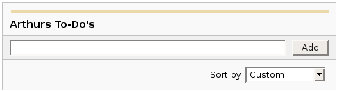

|
|

Headings
To create a header, place "hn. " at the start of the line (where n can be a number from 1-6).
| Notation |
Comment |
| h1. Biggest heading |
Biggest heading
|
| h2. Bigger heading |
Bigger heading
|
| h3. Big Heading |
Big Heading
|
| h4. Normal Heading |
Normal Heading
|
| h5. Small Heading |
Small Heading
|
| h6. Smallest Heading |
Smallest Heading
|
Text Effects
Text effects are used to change the formatting of words and sentences.
| Notation |
Comment |
| *strong* |
Makes text strong.
|
| _emphasis_ |
Makes text emphasis.
|
| ??citation?? |
Makes text in citation.
|
| -strikethrough- |
Makes text as strikethrough.
|
| +underlined+ |
Makes text as underlined.
|
| ^superscript^ |
Makes text in superscript.
|
| ~subscript~ |
Makes text in subscript.
|
| {{text will be monospaced}} |
Makes text as code text.
|
| bq. Some block quoted text |
To make an entire paragraph into a block quotation, place "bq. " before it.
Example:
Some block quoted text
|
{quote}
here is quoteble
content to be quoted
{quote}
|
Quote a block of text that's longer than one paragraph.
Example: here is quotable
content to be quoted
|
{color:red}
look ma, red text!
{color}
|
Changes the color of a block of text.
Example:
look ma, red text!
|
Text Breaks
Most of the time, explicit paragraph breaks are not required - Confluence will be able to paginate your paragraphs properly.
| Notation |
Comment |
| (empty line) |
Produces a new paragraph |
| \\ |
Creates a line break. Not often needed, most of the time Confluence will guess new lines for you appropriately. |
| ---- |
Creates a horizontal rule |
| --- |
Produces — symbol. |
| -- |
Produces – symbol. |
Links
Links are the heart of Confluence, so learning how to create them quickly is important.
| Notation |
Comment |
[#anchor]
[^attachment.ext]
or
[pagetitle]
[pagetitle#anchor]
[pagetitle^attachment.ext]
or
[spacekey:pagetitle]
[spacekey:pagetitle#anchor]
[spacekey:pagetitle^attachment.ext]
|
Creates an internal hyperlink to the specified page in the desired space (or the current one if you don't specify any space). Appending the optional '#' sign followed by an anchor name will lead into a specific bookmarked point of the desired page. Also having the optional '^' followed by the name of an attachment will lead into a link to the attachment of the desired page.
Example:
pagetitle
If such a page doesn't already exist, it will allow you to create the page in the current space. Create page links will have a after them.
Example:
anewpage
|
[link alias|#anchor|link tip]
[link alias|^attachment.ext|link tip]
or
[link alias|pagetitle|link tip]
[link alias|pagetitle#anchor|link tip]
[link alias|pagetitle^attachment.ext|link tip]
or
[link alias|spacekey:pagetitle|link tip]
[link alias|spacekey:pagetitle#anchor|link tip]
[link alias|spacekey:pagetitle^attachment.ext|link tip]
|
Creates an internal hyperlink to the specified page in the desired space (or the current one if you don't specify any space) where the link text is different from the actual hyperlink link. Also you can have an optional link tip which will appear as tooltip. Appending the optional '#' sign followed by an anchor name will lead into a specific bookmarked point of the desired page. Also having the optional '^' followed by the name of an attachment will lead into a link to the attachment of the desired page.
Example:
link alias
|
|
[/2004/01/12/Blog Post]
[spacekey:/2004/01/12/Blog Post]
|
Creates an internal hyperlink to the specified blog post in the desired space (or the current one if you don't specify any space). You must specify the date the post was made in /year/month/day form as shown. Anchors and link text can be added the same way as described above. If you attempt to link to a blog post that doesn't exist, no link will be created.
Example:
|
[/2004/01/12]
[spacekey:/2004/01/12]
or
[my link name|/2004/01/12]
[my link name|spacekey:/2004/01/12]
|
Creates an internal hyperlink to a view of a whole day's blog. Specify the date you wish to link to as year/month/day. Link titles can be supplied as with other links. It is possible to link to days with no blog posts on them: the destination page will just be empty.
Examples:
|
[$12345]
or
[my link name|$12345]
|
Creates a link to a piece of content by its internal database ID. This is currently the only way to link to a mail message.
Examples:
|
[spacekey:]
[custom link title|spacekey:]
|
Creates a link to the space homepage, or space summary page of a particular space. Which of these the link points to depends on the configuration of the space being linked to. If the space does not exist, the link will be drawn with a strike-through to indicate it is an invalid space.
Examples:
|
[~username]
[custom link title|~username]
|
Creates a link to the user profile page of a particular user. By default, will be drawn with a user icon and the user's full name, but if you supply a custom link text, the icon will not be drawn. If the user being linked to does not exist, the link will be drawn with a strike-through.
Examples:
|
[phrase@shortcut]
[custom link text|phrase@shortcut] |
Creates a shortcut link to the specified shortcut site. Shortcuts are configured by the site administrator. You can add a link title to shortcuts in the same manner as other links.
Examples:
|
[http://confluence.atlassian.com]
[Atlassian|http://atlassian.com] |
Creates a link to an external resource, special characters that come after the URL and are not part of it must be separated with a space. External links are denoted with an arrow icon.
Note: the [] around external links are optional in the case you do not want to use any alias for the link.
Examples:
|
| [mailto:legendaryservice@atlassian.com] |
Creates a link to an email address, complete with mail icon.
Example:
legendaryservice@atlassian.com
|
[file://c:/temp/foo.txt]
[file://z:/file/on/network/share.txt] |
This only works on Internet Explorer
Creates a link to file on your computer or on a network share that you have mapped to a drive
|
|
{doc:/display/DOC/Confluence+Documentation+Home}Confluence Documentation{doc}
|
A macro that allows you to quickly create links to content at http://confluence.atlassian.com.
|
|
{anchor:anchorname}
|
Creates a bookmark anchor inside the page. You can then create links directly to that anchor. So the link [My Page#here] will link to wherever in "My Page" there is an {anchor:here} macro, and the link [#there] will link to wherever in the current page there is an {anchor:there} macro.
|
Lists
Lists allow you to present information as a series of ordered items.
| Notation |
Comment |
* some
* bullet
** indented
** bullets
* points
|
A bulleted list (must be in first column). Use more (**) for deeper indentations.
Example:
|
- different
- bullet
- types
|
A list item (with -), several lines create a single list.
Example:
|
# a
# numbered
# list
|
A numbered list (must be in first column). Use more (##, ###) for deeper indentations.
Example:
- a
- numbered
- list
|
|
# a
# numbered
#* with
#* nested
#* bullet
# list * a
* bulletted
*# with
*# nested
*# numbered
* list
|
You can even go with any kind of mixed nested lists:
Example:
- a
- numbered
- list
- a
- bulletted
- with
- nested
- numbered
- list
|
{dynamictasklist:thingsToDo}
{dynamictasklist:thingsToDo|showAssignee=false}
{dynamictasklist:thingsToDo|promptOnDelete=false}
|
The Dynamic Tasklist Macro displays a task list which can be modified in the page as it is viewed. Despite the fact that this plugin has an ajax UI, it is still fully versioned like a normal Confluence page.
- showAssignee - (optional) If set to true the assignee will be shown in the tasks.
- width - (optional) The width of the tasklist (default is 640px). To set the width to 400 pixels, set the parameter value to 400px.
- enableLocking - (optional) If set to true, tasks can be locked so other users can not modify.
- autoLockOnComplete (optional) Used in conjunction with enableLocking. Tasks will auto lock when it is completed.
- promptOnDelete - (optional) If set to false there will not be any confirmation prompt when deleting a task.
Example:
| What you need to type |
What you will get |
| {dynamictasklist:Arthurs To-Do's} |

|
|
Images
Images can be embedded into Confluence pages from attached files or remote sources.
| Notation |
Comment |
!http://www.host.com/image.gif!
or
!attached-image.gif!
|
Inserts an image into the page. If a fully qualified URL is given the image will be displayed from the remote source, otherwise an attached image file is displayed.
|
!spaceKey:pageTitle^image.gif!
!/2007/05/23/My Blog Post^image.gif!
|
Inserts an image that is attached on another page or blog post. If no space key is defined, the current is space is used by default.
|
| !image.jpg|thumbnail! |
Insert a thumbnail of the image into the page (only works with images that are attached to the page). Users can click on the thumbnail to see the full-sized image. Thumbnails must be enabled by the site administrator for this to work.
|
| !image.gif|align=right, vspace=4! |
For any image, you can also specify attributes of the image tag as a comma separated list of name=value pairs like so.
|
{gallery}
{gallery:columns=3}
{gallery:title=Some office photos, and a waterfall|columns=3}
{gallery:title=Some office photos, without the waterfall|exclude=waterfall.jpg}
{gallery:title=One office photo, and a waterfall|include=office1.jpg,waterfall.jpg}
{gallery:title=Some office photos, and a waterfall|page=Gallery of Pictures}
{gallery:title=Some office photos, and a waterfall|page=DOC:Gallery of Pictures}
{gallery:title=Some office photos, and a waterfall|sort=name}
{gallery:title=Some office photos, and a waterfall|sort=date|reverse=true}
|
Create a gallery of thumbnails of all images attached to a page. This will only work on pagesthat allow attachments, obviously. The title parameter allows you to supply a title for the gallery The columns parameter allows you to specify the number of columns in the gallery (by default, 4) The exclude parameter allows you to specify the name of attached images to ignore (i.e., they will not be included in the gallery). You can specify more than one picture, separated by commas. Example: exclude=my picture.png,my picture2.gif The include parameter allows you to specifically include one or more attached images. The gallery will show only those pictures. You can specify more than one picture, separated by commas. Example: include=my picture.png,my picture2.gif The page parameter allows you specify the title of one or more pages which contains the images you want displayed. If a page is in the same space as the page containing the macro, use the format page=My Page Name. To specify a page in a different space, use page=SPACEKEY:My Page Name, such as page=DOC:Gallery Macro. You can specify more than one page, separated by commas. Example: page=Image Gallery,STAFF:Group Photos If a page or attachment file name contains a comma, you can use it in the include, exclude, or page parameters by enclosing it in single or doublequotes. Example: include="this,that.jpg",theother.png The sort parameter allows you to control the order of the images. The options are name,comment, date, or size. The reverse parameter is used in conjunction with the sort parameter to reverse the order of the specified sort. Valid values are true and false. Previous versions of the Gallery macro had an additional slideshow parameter. This is no longer used in the latest version, and the slide show is always enabled. We have left the parameter here for compatibility with older versions of the macro.
|
Tables
Tables allow you to organise content in a rows and columns, with a header row if required.
| Notation |
Comment |
||heading 1||heading 2||heading 3||
|col A1|col A2|col A3|
|col B1|col B2|col B3|
|
Makes a table. Use double bars for a table heading row. Note that each table-row has to be defined on a single line.
The code given here produces a table that looks like:
| heading 1 |
heading 2 |
heading 3 |
| col A1 |
col A2 |
col A3 |
| col B1 |
col B2 |
col B3 |
|
{column:width=50%}
Text in this column.
{column}
|
Defines a single column.
- width: - (optional) the width of the column.
Must be defined in a section macro.
|
{section}
{column:width=30%}
Column one text goes here
{column}
{column:width=70%}
Column two text goes here
{column}
{section}
{section:border=true}
...
{section}
|
If you want to use columns instead of tables, you can define them first by marking a {section}, and then placing any number of {column}s inside.
- border: - (optional) set to "true" to draw a border around the section and columns.
|
{csv}
, January, February, March, April
Max, 37.5, 32.7, 28.0, 25.3
Min, 31.3, 26.8, 25.1, 18.7
{csv}
{csv:output=wiki|width=900|border=15|delimiter=whitespace}
Month Max Min Average
January 25.5 *6.3* 15.9
February 32.4 12.8 22.6
March 44.6 24.5 34.6
April 59.7 37.1 48.4
May 72.5 48.7 60.6
June 81.3 57.9 69.6
July 85.2 62.8 74
August 82.5 60.7 71.6
September 73.7 51.7 62.7
October 61.1 40.1 50.6
November 43.6 27.4 35.5
December 29.9 13.6 21.8
{csv}
|
Converts csv and other deliminated data into a table.
CSV is not a formal standard, but the best reference is
The Comma Separated Value (CSV) File Format.gif) .
The support in this macro comes close to following this pseudo-standard.
For more details see
SCRP-16. This macro shares common table capabilities with other table
based macros (excel, table-plus, and sql). .
The support in this macro comes close to following this pseudo-standard.
For more details see
SCRP-16. This macro shares common table capabilities with other table
based macros (excel, table-plus, and sql).
- output - Determines how the output is formated:
- html - Data is output as a HTML table (default).
- wiki - Data is output as a Confluence wiki table. Use this option if you want data within the table to be formated by the Confluence wiki renderer.
- script - Location of csv data. Default is the macro body only. If a location of data is specified, the included data will follow the body data.
- #filename - Data is read from the file located in confluence home directory/script/filename. Subdirectories can be specified.
- global page template name - Data is read from a global page template.
- space:page template name - Data is read from a space template.
- ^attachment - Data is read from an attachment to the current page.
- page^attachment - Data is read from an attachment to the page name provided.
- space:page^attachment - Data is read from an attachment to the page name provided in the space indicated.
- url - Specifies the URL of an csv file. If a url location is specified, the included data will follow the body and script data.
Use of this parameter may be restricted for security reasons. See your administrator for details.
- heading - Number of rows to be considered heading rows (default is 1 row).
Specify heading=false or heading=0 to not show any heading lines.
Heading rows do not participate in sorting.
- footing - Number of rows to be considered footing rows (default is 0).
Footing rows do not participate in sorting. An auto total row is automatically treated as a footing row.
- border - The border width in pixels. Defaults to normal table border width.
- width - The table width in pixels. Default is 100%.
- delimiter - Delimiter that separates columns. Note that trailing delimiters on a line result in a blank column at the end of the row.
- , or "," (comma) - The default column separator.
- whitespace - Blanks, tabs, and other white space are used to separate columns.
- tab - A single tab character is used to separate columns.
- blanks - Blank or blanks only.
- pipe - A single pipe (|) character is used to separate columns.
- other single character delimiter - may be within double quotes with some restrictions. Examples: ";", "=",
- columns - Comma separated list of column numbers in any order.
Defaults to all columns in existing order.
Columns are enumerated starting at 1.
- ignoreTrailingBlankRows - By default, all trailing blank rows will be ignored.
A row is considered blank if all the columns selected by the column parameter are blank.
Set ignoreTrailingBlankRows=false to show these blank rows.
- quote - the character used to represent quoted data. Quoted data may contain delimiters or new lines. Quote character must be doubled inside a quoted string.
- double - Double quote character (default).
- single - Single quote character.
- escape - When wiki output is requested (output=wiki), some special characters (like '|', '[', ']', '{', '}') in data may cause undesirable formatting of the table.
Set escape=true to allow these special characters to be escaped so that it will not affect the formatting.
The default is false so that data that has wiki markup will be handled correctly.
- showWiki - Default is false. Set to true to show a non-formatted version of the wiki table following the formatted table.
This is used to help resolve formating issues.
|
{table-plus}
|| || January || February || March || April ||
| Max | 37.5 | 32.7 | 28.0 | 25.3 |
| Min | 31.3 | 26.8 | 25.1 | 18.7 |
{table-plus}
{table-plus:width=500|border=15|enhableHighlighting=false|columnTypes=S,F,F,F}
|| Month || Max || Min || Average ||
| January | 25.5 | *6.3* | 15.9 |
| February | 32.4 | 12.8 | 22.6 |
| March | 44.6 | 24.5 | 34.6 |
| April | 59.7 | 37.1 | 48.4 |
Other text can be here too!
|| Another table ||
| more data |
{table-plus}
{table-plus:columnTypes=S,-,.|autoNumber=true|sortColumn=3
|columnAttributes=,,style="background:yellow; font-size:14pt;"}
|| Name || Phone || TCP ||
| John | 555-1234 | 192.168.1.10 |
| Mary | 555-2134 | 192.168.1.12 |
| Bob | 555-4527 | 192.168.1.9 |
{table-plus}
|
Adds column sorting and other attributes to one or more tables found in the body of the macro.
The tables can be produced by wiki markup or other means.
This macro shares common table capabilities with other table
based macros (excel, csv, and sql).
- heading - Number of rows to be considered heading rows (default is 1 row).
Specify heading=false or heading=0 to not show any heading lines.
Heading rows do not participate in sorting.
- footing - Number of rows to be considered footing rows (default is 0).
Footing rows do not participate in sorting. An auto total row is automatically treated as a footing row.
- width - The table width in pixels. Default is 100%.
- border - The border width in pixels. Defaults to normal table border width.
- multiple - Default is true which means all tables found within the macro body are processed.
Set multiple=false to only process the first table found and may need to be used
if the table includes cells that are also tables.
- Other parameters - Other parameters are passed through to the html table markup for more advanced
capabilities or to override the default class
A javascript enabled browser is required to enable these capabilities.
A number of table based macros (table-plus, csv, excel, and sql) share these common capabilities.
- Column sorting - sort a column by clicking on column heading.
Clicking again will reverse the order. Auto sorting before display
- Row highlighting on mouse over - row is highlighted when mouse goes over any row element for non-heading rows
- Column attributes - ability to set the display attributes (color, font) on a column basis
- Auto numbering - ability to automatically add a leading column with the data row count.
- Auto totaling - ability to automatically add a footing row that totals all numeric columns.
Parameters - the following parameters control these common table capabilities:
- enableSorting - Set enableSorting=false to prevent sorting.
- enableHighlighting - As the mouse moves over a table row, the row will be highlighted by default.
Set enableHighlighting=false to stop this behavior.
This parameter was formerly known as highlightRow which still works.
- sortColumn - The table can be auto sorted before it is displayed by any valid column name
or number provided by this parameter. No auto sorting will be done
if this value is not provided or is invalid. A column number is a 1-based count
of columns (excluding auto number column).
- sortDescending - If sortDescending=true, the sort indicated by the sortColumn will
be done in reverse order.
- sortTip - Text that is used to provide user feedback with mouse is over
a column heading that is sortable. Default text is: "Click to sort" followed by
the column name if available.
- sortIcon - Default is false to not show a sort indicator icon.
Set sortIcon=true to include a sort icon in the first heading row for sortable columns.
An icon will show for the last column sorted indicating the direction the column was sorted.
- highlightColor - Color of row when mouse is over a row element.
See Colors for how to specify.
- autoNumber - If autoNumber=true, an additional column will be added that will
count each data row.
- autoTotal - If autoTotal=true, an additional row will be appended to the end of the table
that will contain totals of all numeric columns.
- autoNumberSort - If autoNumberSort=true, the auto number column will be sortable and
will retain the original data row count even after row sorting.
- columnTypes - By default, all columns are treated as strings for sorting purposes unless
a more specific sort type is provided either by the macro logic or
by this parameter. The parameter
is a comma separated list of column type indicators to identify column types.
- S - string
- I - integer
- F - float
- C - currency or similar where it is a float value with pre or post characters
- D - date in the browser date format. More advanced date handling may be available
on your server after installation of a date handling library. See online
docmentation for more information.
- X - exclude this column from user selectable sorting
- . or - or : or / - separated numbers, like phone numbers or TCP addresses.
Valid values are multiple integer numbers separated by one of the separators indicated by the type.
- H - hide the column.
- columnAttributes - A comma separated list of values used to modify cell attributes for all
cells in a column. The position in the comma separated list corresponds
to the column that the values apply to. Each value is a double semi-colon (;;) separated
list of attributeName=value pairs that will be applied to the column cells.
- enableHeadingAttributes - By default, any column attributes provided will be applied to the all column rows including heading rows.
Set enableHeadingAttributes=false to have the column attributes apply only to data rows.
- id - Sets the table id for the table for use in macros (like the chart macro) to identify a
specific table.
|
Advanced Formatting
More advanced text formatting.
| Notation |
Comment |
{code:title=Bar.java|borderStyle=solid}
// Some comments here
public String getFoo()
{
return foo;
}
{code}
{code:xml}
<test>
<another tag="attribute"/>
</test>
{code}
|
Makes a pre-formatted block of code with syntax highlighting. All the optional parameters of {panel} macro are valid for {code} too. The default language is Java but you can specify JavaScript, ActionScript, XML, HTML and SQL too.
Example:
public String getFoo()
{
return foo;
}
<test>
<another tag="attribute"/>
</test>
|
{chart:title=Fish Sold}
|| Fish Type || 2004 || 2005 ||
|| Herring | 9,500 | 8,300 |
|| Salmon | 2,900 | 4,200 |
|| Tuna | 1,500 | 1,500 |
{chart}
{chart:type=line|title=Temperatures in Brisbane|yLabel=Celcius
|dataDisplay=true|dataOrientation=vertical}
|| Month || Min || Max ||
| January | 31.3 | 37.5 |
| February | 26.8 | 32.7 |
| March | 25.1 | 28 |
| April | 18.7 | 25.3 |
{chart}
{chart:type=timeSeries|dateFormat=MM.yyyy|timePeriod=Month|
dataOrientation=vertical|rangeAxisLowerBound=0|colors=blue,gray}
|| Month || Revenue ||
| 1.2005 | 31.8 |
| 2.2005 | 41.8 |
| 3.2005 | 51.3 |
| 4.2005 | 33.8 |
| 5.2005 | 27.6 |
| 6.2005 | 49.8 |
| 7.2005 | 51.8 |
| 8.2005 | 77.3 |
| 9.2005 | 73.8 |
| 10.2005 | 97.6 |
| 11.2005 | 101.2 |
| 12.2005 | 113.7 |
|| Month || Expenses ||
| 1.2005 | 41.1 |
| 2.2005 | 43.8 |
| 3.2005 | 45.3 |
| 4.2005 | 45.0 |
| 5.2005 | 44.6 |
| 6.2005 | 43.8 |
| 7.2005 | 51.8 |
| 8.2005 | 52.3 |
| 9.2005 | 53.8 |
| 10.2005 | 55.6 |
| 11.2005 | 61.2 |
| 12.2005 | 63.7 |
{chart}
|
Displays a chart using data from the supplied table or tables.
- Chart type parameters - These parameters change what type of chart to display and the way the chart looks.
- Display control parameters
- width - The width of the chart in pixels (default is '300')
- height - The height of the chart in pixels (default is '300')
- dataDisplay - Default is false to not display the rendered body of the macro (usually the data tables). When dataDisplay=true or dataDisplay=after, the data will be displayed after the chart. When dataDisplay=before, the data will be displayed before the chart.
- imageFormat - Default is png. Format of generated image. Valid formats are png and jpg. Other formats may be also be valid if installed on your server.
- Title and label customization parameters
- title - The title of the chart.
- subTitle - A subtitle for the chart using a smaller font.
- xLabel - The label to use for the x (domain) axis
- yLabel - The label to use for the y (range) axis
- legend - A legend will be displayed unless legend=false is specified.
- Data specification parameters - The data for the chart is taken from tables found when the macro body is rendered. These options control how this data is interpreted. By default, numeric and date values are interpreted according to the Confluence global default language (locale) formats. If conversion fails, other languages defined to Confluence will be tried. Additional conversion options can be specified using the parameters below.
- tables - Comma separated list of table ids and/or table numbers contained within the body of the macro that will be used as the data for the chart. Defaults to all first level tables. If data tables are embedded in other tables, then table selection will be required. This occurs when more complex formatting is done (for example using section and column macros).
- columns - Comma separated list of column labels and/or column titles and/or column numbers for tables used for chart data. This applies to all tables processed. Defaults to all columns. Columns are enumerated starting at 1. Column label is the text for the column in the header row. Column title is the (html) title attribute for the column in the header row.
- dataOrientation - The data tables will be interpreted as columns (horizontally) representing domain and x values unless 'dataOrientation=vertical'.
- timeSeries - If 'true', the x values in an XY plot will be treated as time series data and so will be converted according date formats.
- dateFormat - For time series data, the date format allows for additional customization of the conversion of data to date values. By default, the Confluence language defined date formats will be used. If a dateFormat is specified, it will be the first format used to interpret date values. Specify a format that matches the format of the time series data. See Date Format.
- timePeriod - Specify the time period for time series data. Default is 'Day'. This defines the granularity of how the data is interpreted. Valid values are: Day, Hour, Millisecond, Minute, Month, Quarter, Second, Week, Year.
- language - If provided, the language and country specification will be used to create additional number and date formats to be used for data conversion. This specification will be used before the default languages automatically used. Valid values are 2 character ISO 639-1 alpha-2 codes.
- country - Used in combination with the language parameter. Valid values are 2 character ISO 3166 codes.
- forgive - Default is true to try to convert numeric and date values that do not totally match any of the default or user specified formats. Specify forgive=false to enforce strict data format. Data format errors will cause the chart to not be produced.
- Color customization parameters - See Colors for how to specify colors.
- bgColor - Color (default is 'white') to use as the background of the chart.
- borderColor - Color of a border around the chart. Default is to not show a border.
- colors - Comma separated list of colors used to customize category, sections, and series colors.
- Axis customization parameters - Depending on the chart type, the range and domain axis may be customized. These values are automatically generated based on the data but can be overridden by specifying one or more more of these paramters.
- rangeAxisLowerBound - range axis lower bound
- rangeAxisUpperBound - range axis upper bound
- rangeAxisTickUnit - range axis units between axis tick marks
- rangeAxisLabelAngle - angle for the range axis label in degrees
- domainAxisLowerBound - domain axis lower bound. For a date axis, this value must be expressed in the date format specified by the dateFormat parameter. (Only used in XY Plots, standard charts will have no effect)
- domainAxisUpperBound - domain axis upper bound. For a date axis, this value must be expressed in the date format specified by the dateFormat parameter. (Only used in XY Plots, standard charts will have no effect)
- domainAxisTickUnit - domain axis units between axis tick marks. For a date axis, this value represents a count of the units specified in the timePeriod parameter. The time period unit can be overridden by specifying a trailing character: y for years, M for months, d for days, h for hours, m for minutes, s for seconds, u - milliseconds. (Only used in XY Plots, standard charts will have no effect)
- domainAxisLabelAngle - angle for the domain axis label in degrees. (Only used in XY Plots, standard charts will have no effect)
- categoryLabelPosition - allows axis label text position for categories to be customized
- up45 - 45 degrees going upward
- up90 - 90 degrees going upward
- down45 - 45 degrees going downward
- down90 - 90 degrees going downward
- dateTickMarkPosition - placement of the date tick mark
- start (default) - tick mark is at the start of the date period
- middle - tick mark is in the middle of the date period
- end - tick mark is at the end of the date period
- Pie chart customization parameters
- pieSectionLabel - Format for how pie section labels are displayed. :
- %0% is replaced by the pie section key.
- %1% is replaced by the pie section numeric value.
- %2% is replaced by the pie section percent value.
Example 1: "%0% = %1%" would display something like "Independent = 20"
Example 2: "%0% (%2%)" would display something like "Independent (20%)"
- pieSectionExplode - Comma separated list of pie keys that are to be shown exploded. Defaults to no exploded sections. Note: requires jFreeChart version 1.0.3 or higher.
- Attachment parameters - These are advanced options that can be used for chart versioning, automation enablement, and to improve performance. Use these options carefully! Normally, the chart image is regenerated each time the page is displayed. These options allow for the generated image to be saved as an attachment and have subsequent access re-use the attachment. This can be useful especially when combined with the cache macro to improve performance. Depending on the options chosen, chart images can be versioned for historical purposes.
- attachment - Chart image will be saved in a attachment.
- ^attachment - chart.macro.param.attachment.attachment
- page^attachment - The chart is saved as an attachment to the page name provided.
- space:page^attachment - The chart is saved as an attachment to the page name provided in the space indicated.
- attachmentVersion - Defines the the versioning mechanism for saved charts.
- new - (default) Creates new version of the attachment.
- replace - Replaces all previous versions of the chart. To replace an existing attachment, the user must be authorized to remove attachments for the page specified.
- keep - Only saves a new attachment if an existing export of the same name does not exist. An existing attachment will not be changed or updated.
- attachmentComment - Comment used for a saved chart attachment.
- thumbnail - Default is false. If true, the chart image attachment will be shown as a thumbnail.
Colors can be specified by name or hex value. See Web-colors. The following are the valid color names that will automatically be converted.
| Color |
Hexadecimal |
Color |
Hexadecimal |
Color |
Hexadecimal |
Color |
Hexadecimal |
| black |
#000000 |
silver |
#c0c0c0 |
maroon |
#800000 |
red |
#ff0000 |
| navy |
#000080 |
blue |
#0000ff |
purple |
#800080 |
fuchsia |
#ff00ff |
| green |
#008000 |
lime |
#00ff00 |
olive |
#808000 |
yellow |
#ffff00 |
| teal |
#008080 |
aqua |
#00ffff |
gray |
#808080 |
white |
#ffffff |
Copied from Java SimpleDateFormat specification.
Date and time formats are specified by date and time pattern strings. Within date and time pattern strings, unquoted letters from 'A' to 'Z' and from 'a' to 'z' are interpreted as pattern letters representing the components of a date or time string. Text can be quoted using single quotes (') to avoid interpretation. "'" represents a single quote. All other characters are not interpreted; theyre simply copied into the output string during formatting or matched against the input string during parsing.
The following pattern letters are defined (all other characters from 'A' to 'Z' and from 'a' to 'z' are reserved):
Pattern letters are usually repeated, as their number determines the exact presentation.
- Text:
For formatting, if the number of pattern letters is 4 or more, the full form is used; otherwise a short or abbreviated form is used if available. For parsing, both forms are accepted, independent of the number of pattern letters.
- Number:
For formatting, the number of pattern letters is the minimum number of digits, and shorter numbers are zero-padded to this amount. For parsing, the number of pattern letters is ignored unless its needed to separate two adjacent fields.
- Year:
For formatting, if the number of pattern letters is 2, the year is truncated to 2 digits; otherwise it is interpreted as a number.
For parsing, if the number of pattern letters is more than 2, the year is interpreted literally, regardless of the number of digits. So using the pattern "MM/dd/yyyy", "01/11/12" parses to Jan 11, 12 A.D. For parsing with the abbreviated year pattern ("y" or "yy"), SimpleDateFormat must interpret the abbreviated year relative to some century. It does this by adjusting dates to be within 80 years before and 20 years after the time the SimpleDateFormat instance is created. For example, using a pattern of "MM/dd/yy" and a SimpleDateFormat instance created on Jan 1, 1997, the string "01/11/12" would be interpreted as Jan 11, 2012 while the string "05/04/64" would be interpreted as May 4, 1964. During parsing, only strings consisting of exactly two digits, will be parsed into the default century. Any other numeric string, such as a one digit string, a three or more digit string, or a two digit string that isnt all digits (for example, "-1"), is interpreted literally. So "01/02/3" or "01/02/003" are parsed, using the same pattern, as Jan 2, 3 AD. Likewise, "01/02/-3" is parsed as Jan 2, 4 BC.
- Month:
If the number of pattern letters is 3 or more, the month is interpreted as text; otherwise, it is interpreted as a number.
- General time zone:
Time zones are interpreted as text if they have names. For time zones representing a GMT offset value, the following syntax is used:
GMTOffsetTimeZone:
GMT Sign Hours : Minutes
Sign: one of
+ -
Hours:
Digit
Digit Digit
Minutes:
Digit Digit
Digit: one of
0 1 2 3 4 5 6 7 8 9
Hours must be between 0 and 23, and Minutes must be between 00 and 59. The format is locale independent and digits must be taken from the Basic Latin block of the Unicode standard. For parsing, RFC 822 time zones are also accepted.
- RFC 822 time zone:
For formatting, the RFC 822 4-digit time zone format is used:
RFC822TimeZone:
Sign TwoDigitHours Minutes
TwoDigitHours:
Digit Digit
TwoDigitHours must be between 00 and 23. Other definitions are as for general time zones. For parsing, general time zones are also accepted.
|
{show-to:user=bob|group=a-group,another-group|space=MYSPACE:edit}
This text is only visible to bob, users in a-group or another-group,
and users who can edit the MYSPACE Space.
{show-to}
|
Shows the content to users who meet any of the specified requirements.
In general, all filtering parameters are lists of optional, required or excluded values.
Optional items simply list the value, required items are prefixed with a '+', and excluded values
are prefixed with a '-'. Each value is separated by a ',' or a ';'. For example, to specify that only user "foo" and
not "bar" can view the content, do this:
user=foo, -bar
If you need to specify a value which contains any of the special characters (namely +, -, ", ; and comma), just
wrap it in a set of quotes. Eg:
user="foo-bar"
- user - (optional) the (list of) users who cannot see the content. May also be one of the following special values:
- @self - the user current user.
- @anonymous - no user is logged in.
- @authenticated - any user is authenticated.
- group - (optional) the (list of) groups who can see the conent.
- space:perm - (optional) the (list of) spaces where, if the user can view
the space, they can see the content. The user's permission type to that space may be added also.
- view - (default) the user can view the space.
- edit - the user can edit pages.
- admin - the user has administration access.
- news - the user can post a news entry.
- trim - (optional) if 'true' (the default), the content will be trimmed of whitespace at its beginning and end. (default).
- match - (optional) specify the match type.
- any - (default) the content is displayed if the user matches any of the criteria.
- all - the content is displayed if the user matches *all* the criteria.
- prerender - (optional) if 'true', the macros will be 'pre-rendered'. This is essentially a workaround for an issue where some
macros will display underendered wiki markup when put inside this macro.
|
{hide-from:user=bob|group=a-group,another-group|space=MYSPACE:edit}
This text is only hidden from bob, users in a-group or another-group,
and users who can edit the MYSPACE Space.
{hide-from}
|
Shows the content to users who do not meet any of the specified requirements.
In general, all filtering parameters are lists of optional, required or excluded values.
Optional items simply list the value, required items are prefixed with a '+', and excluded values
are prefixed with a '-'. Each value is separated by a ',' or a ';'. For example, to specify that only user "foo" and
not "bar" can view the content, do this:
user=foo, -bar
If you need to specify a value which contains any of the special characters (namely +, -, ", ; and comma), just
wrap it in a set of quotes. Eg:
user="foo-bar"
- user - (optional) the (list of) users who cannot see the content. May also be one of the following special values:
- @self - the user current user.
- @anonymous - no user is logged in.
- @authenticated - any user is authenticated.
- group - (optional) the (list of) groups who cannot see the conent.
- space:perm - (optional) the (list of) spaces where, if the user can view
the space, they cannot see the content. The user's permission type to that space may be added also.
- view - (default) the user has permission to view the space.
- edit - the user has permission to edit pages.
- admin - the user has administration access.
- news - the user has permission post a news entry.
- trim - (optional) if 'true' (the default), the content will be trimmed of whitespace at its beginning and end. (default).
- match - (optional) specify the match type.
- any - (default) the content is hidden if the user matches any of the criteria.
- all - the content is hiddent if the user matches *all* the criteria.
- prerender - (optional) if 'true', the macros will be 'pre-rendered'. This is essentially a workaround for an issue where some
macros will display underendered wiki markup when put inside this macro.
|
{show-if:type=news|display=printable|space=MYSPACE|action=edit}
This text is show if the page is a news item, is in printing mode,
is in MYSPACE, or is being edited.
{show-if}
|
Shows its content if the context meets any of the specified requirements.
In general, all filtering parameters are lists of optional, required or excluded values.
Optional items simply list the value, required items are prefixed with a '+', and excluded values
are prefixed with a '-'. Each value is separated by a ',' or a ';'. For example, to specify that only content which has the "foo" label but
not the "bar" label would look like this:
labels=foo, -bar
If you need to specify a value which contains any of the special characters (namely +, -, ", ; and comma), just
wrap it in a set of quotes. Eg:
labels="foo-bar"
- type(s) - (optional) the (list of) page types. May be:
- page
- news
- comment
- spacedescription
- display(s) - (optional) the (list of) display modes. May be:
- default - The standard display mode.
- printable - Printer, PDF or Word mode.
- pdf - PDF export mode.
- word - Word export mode.
- preview - Edit preview mode.
- space(s) - (optional) the (list of) spaces.
- action(s) - (optional) the action taking place.
- view - The content is editable and is currently being viewed.
- edit - The content is editable and is currently being edited.
- template - The content is a template being previewed.
- dashboard
- The content is the dashboard.
- header(s) - (optional) the list of HTTP headers from the browser to check.
Values are of the form "name:value" or "name::regexp" (note the double ":"). E.g:
"header=referrer:/index.html" will match a referrer of exactly "/index.html".
"header=referrer::.*/index.html" will match a referrer which ends with "/index.html".
Multiple headers can be checked by separating with "," and optionally adding "+" for
required or "-" for excluded.
- label(s) - (optional) the list of labels to check the page has. E.g:
"labels=one, two" or "labels=+one, -two"
- match - If set to 'all', then all items listed must match. Defaults to 'any'.
- trim - If set to 'false', the content will not be trimmed before being output (if appropriate).
- prerender - (optional) if 'true', the macros will be 'pre-rendered'. This is essentially a workaround for an issue where some
macros will display underendered wiki markup when put inside this macro.
|
{hide-if:type=news|display=printable|space=MYSPACE|action=edit}
This text is hidden if the page is a news item, is in printing mode,
is in MYSPACE, or is being edited.
{hide-if}
|
Shows its content if the context does not meet any of the specified requirements.
In general, all filtering parameters are lists of optional, required or excluded values.
Optional items simply list the value, required items are prefixed with a '+', and excluded values
are prefixed with a '-'. Each value is separated by a ',' or a ';'. For example, to specify that only content which has the "foo" label but
not the "bar" label would look like this:
labels=foo, -bar
If you need to specify a value which contains any of the special characters (namely +, -, ", ; and comma), just
wrap it in a set of quotes. Eg:
labels="foo-bar"
- type(s) - (optional) the (list of) page types. May be:
- page
- news
- comment
- spacedescription
- display(s) - (optional) the (list of) display modes. May be:
- default - The standard display mode.
- printable - Printer, PDF or Word mode.
- pdf - PDF export mode.
- word - Word export mode.
- preview - Edit preview mode.
- space(s) - (optional) the (list of) spaces.
- action(s) - (optional) the action taking place.
- view - The content is editable and is currently being viewed.
- edit - The content is editable and is currently being edited.
- template - The content is a template being previewed.
- dashboard
- The content is the dashboard.
- header(s) - (optional) the list of HTTP headers from the browser to check.
Values are of the form "name:value" or "name::regexp" (note the double ":"). E.g:
"header=referrer:/index.html" will match a referrer of exactly "/index.html".
"header=referrer::.*/index.html" will match a referrer which ends with "/index.html".
Multiple headers can be checked by separating with "," and optionally adding "+" for
required or "-" for excluded.
- label(s) - (optional) the list of labels to check the page has. E.g:
"labels=one, two" or "labels=+one, -two"
- header - (optional) The (list of) headers.
- match - If set to 'all', then all items listed must match. Defaults to 'any'.
- trim - If set to 'false', the content will not be trimmed before being output (if appropriate).
- prerender - (optional) if 'true', the macros will be 'pre-rendered'. This is essentially a workaround for an issue where some
macros will display underendered wiki markup when put inside this macro.
|
{widget:url=http://au.youtube.com/watch?v=cOE8ukQoz6E}
{widget:url=http://au.youtube.com/watch?v=cOE8ukQoz6E | width=500 | height=400}
|
Widget Connector
|
|
{content-by-user:fred}
|
Displays a simple table of all the content (pages, comments, blog posts, user profiles and space descriptions) created by a user (here 'fred').
|
|
{index}
|
Displays an index of all the pages in the current space, cross linked and sorted alphabetically.
|
{include:Home}
{include:FOO:Home}
{include:spaceKey=FOO|pageTitle=Home}
|
Includes one page within another (this example includes a page called "Home"). Pages from another space can be included by prefacing the page title with a space key and a colon.
The user viewing the page must have permission to view the page being included, or it will not be displayed.
|
{note:title=Be Careful}
The body of the note here..
{note}
|
Prints a simple note to the user.
- title: - (optional) the title of the note.
- icon: - (optional) if "false", dont display the icon.
|
{warning:title=Warning}
Insert warning message here!
{warning}
|
Prints a warning note to the user.
- title: - (optional) the title of the warning.
- icon: - (optional) if "false", dont display the icon.
|
{info:title=Be Careful}
This macro is useful for including helpful information in your confluence pages
{info}
|
Prints an informational note.
- title: - (optional) the title of the information box.
- icon: - (optional) if "false", dont display the icon.
|
{tip:title=Handy Hint}
Join the Confluence Mailing-List!
{tip}
|
Prints a helpful tip for the user.
- title: - (optional) the title of the tip.
- icon: - (optional) if "false", dont display the icon.
|
{noformat}
pre-formatted piece of text
so *no* further _formatting_ is done here
{noformat}
|
Makes a pre-formatted block of text with no syntax highlighting. All the optional parameters of {panel} macro are valid for {noformat} too.
- nopanel: If the value of "nopanel" is true, then the excerpt will be drawn without its surrounding panel.
Example:
|
{panel}Some text{panel}
{panel:title=My Title}Some text with a title{panel}
{panel:title=My Title| borderStyle=dashed| borderColor=#ccc| titleBGColor=#F7D6C1| bgColor=#FFFFCE}
a block of text surrounded with a *panel*
yet _another_ line
{panel}
|
Embraces a block of text within a fully customizable panel. The optional parameters you can define are the following ones:
- title: Title of the panel
- borderStyle: The style of the border this panel uses (solid, dashed and other valid CSS border styles)
- borderColor: The color of the border this panel uses
- borderWidth: The width of the border this panel uses
- bgColor: The background color of this panel
- titleBGColor: The background color of the title section of this panel
Example:
My Title
a block of text surrounded with a panel
yet another line
|
Confluence Content
Ways to include, summarise or refer to other Confluence content.
| Notation |
Comment |
!quicktime.mov!
!spaceKey:pageTitle^attachment.mov!
!quicktime.mov|width=300,height=400!
!media.wmv|id=media!
|
Embeds an object in a page, taking in a comma-separated of properties.
Default supported formats:- Flash (.swf)
- Quicktime movies (.mov)
- Windows Media (.wma, .wmv)
- Real Media (.rm, .ram)
- MP3 files (.mp3)
Other types of files can be used, but may require the specification of the "classid", "codebase" and "pluginspage" properties in order to be recognised by web browsers.
Common properties are:
- width - the width of the media file
- height - the height of the media file
- id - the ID assigned to the embedded object
Due to security issues, files located on remote servers are not permitted
Styling
By default, each embedded object is wrapped in a "div" tag. If you wish to style the div and its contents, override the "embeddedObject" CSS class. Specifying an ID as a property also allows you to style different embedded objects differently. CSS class names in the format "embeddedObject-ID" are used.
|
|
{attachments:patterns=.*doc|old=true}
|
Prints a list of attachments
- patterns: - (optional) a comma separated list of regular expressions. Only file names matching one of these are displayed.
- old: - (optional) if "true", display old versions of attachments as well.
- upload: - (optional) if "true", allow the upload of new attachments.
|
|
{bookmarks}
|
Displays a list of bookmarks using the criteria supplied.
Searching Options
- spaces comma separated list of spaces to search for. Meta space names @all, @personal, @global can also be used. (If no labels and spaces are supplied will default to current space.)
- labels list of labels that are applied to the bookmarks. (If multiple labels are specified bookmarks only have to match one label to be included.)
- creators comma separated list of users that have created bookmarks.
Sorting Options
- sort comma separated list of attributes to sort the bookmarks by. Valid values are:
- creation Bookmark Created Date
- creator Bookmark Creator Name
- title Bookmark title
Default is by created date.
- reverseSort Reverse the order of the bookmarks. Default is false.
Display Options All options default to true.
-
showAuthor
The user that created the bookmark.
-
showDate
The relative date the bookmark was created.
-
showDescription
The bookmark description.
-
showEditLinks
If the current user has permission, show quick links to edit or remove the bookmark.
-
showLabels
The labels for the bookmark.
-
showListHeader
The bookmark list header (with the rss feed link).
-
max
The maximum number of bookmarks to display. Defaults to 15.
-
showSpace
The space the bookmark is saved in
-
showViewLink
A link to the actual bookmark page
|
|
{pagetree}
{pagetree:root=PageName}
{pagetree:root=PageName|sort=natural|excerpt=true|reverse=false}
{pagetree:root=@home|startDepth=3}
{pagetree:searchBox=true}
{pagetree:expandCollapseAll=true}
|
Provides page hierachal tree within a space. If no parameters are specified the root of the tree will
be the home page, a different root page can be specified by providing the page to the root
parameter.
- root: - (optional) page where the tree would be rooted from. Meta root names @self, @parent, @home can also be used.
- sort: - (optional) sorts the tree node. It my be one of the following: bitwise, creation, modified, natural, position. Default sorting is position
- excerpt: - (optional) true/false flag that indicate if a page excerpt would be included in the tree display (default is false).
- reverse: - (optional) true/false flag that allows you to reverse the order of the display (default is false).
- searchBox: - (optional) true/false flag that allows you to add a search box in the tree that would search from the root page (default is false).
- expandCollapseAll: - (optional) true/false flag that allows you to add an expand all and a collapse all row (default is false).
- startDepth: - (optional) a number that indicates the initial depth that the tree would display (default value is 1).
|
|
{pagetreesearch}
{pagetreesearch:rootPage=PageName}
{pagetreesearch:rootPage=Space:PageName}
|
Provides a search box to search a page hierachal tree within a space.
If no parameters are specified the root of the tree will be the current
page, a different root page can be specified by providing the page to the rootPage parameter.
|
{toc:style=disc|indent=20px}
{toc:outline=true|indent=0px|minLevel=2}
{toc:type=flat|separator=pipe|maxLevel=3}
|
Creates a Table of Contents for headings on the the current page.
- type - (optional) The type of output. May be one of the following:
- list - (default) The headings are output in hierarchical list format.
- flat - The headings are listed on a single line with a separator between them.
- class - (optional) If specified, the TOC will be output with the specified CSS class. Also, if set, no other style values will be output.
- style - (optional) The style of the list items if in list mode. The style may be any of the following:
- none - (default) Headings are output in indented lists with no bullet points or numbers prefixing them.
- any CSS style - Headings are output in indented lists with the specified CSS style.
- outline - (optional) If set to true, each item will be prefixed with a number in the format 'X.Y'. The numbers will increase automatically, and extra levels will be added for lower-level headings.
- ident - (optional) The amount to indent each list sub-heading by (default is '10px').
- separator - (optional) The type of separator to use if the style is flat. May be one of the following:
- bracket - Square brackets ('[', ']') surrounding each item. (default)
- brace - Square brackets ('[', ']') surrounding each item. (default)
- comma - A comma (',') between each item.
- paren - Parentheses ('(', ')') surrounding each item.
- pipe - A pipe ('|') between each item.
- newline - A line break after each item.
- "custom" - Any other character you wish, specified between quotes.
- minLevel - (optional) The lowest heading level to include (inclusive). (default is 1).
- maxLevel - (optional) The highest heading level to include (inclusive). (default is 7).
- include - (optional) If set, any headings not matching the regular expression will be ignored. Due to '|' being the parameter separator in macros, use ',' where you would have usually used '|'.
- exclude - (optional) If set, any headings matching the regular expression will be excluded. Due to '|' being the parameter separator in macros, use ',' where you would have usually used '|'.
- printable - (optional) If set to 'false', the table of contents will not be visible when being printed.
|
{toc-zone:separator\=brackets|location=top}
h1. First Heading
blah blah blah...
{toc-zone} |
Creates a Table of Contents for headings contained in the macro body.
- location - (optional) The location to have the table of contents output. May be 'top' or 'bottom'. If not set, it will be output at both locations.
- type - (optional) The type of output. May be one of the following:
- list - (default) The headings are output in hierarchical list format.
- flat - The headings are listed on a single line with a separator between them.
- class - (optional) If specified, the TOC will be output with the specified CSS class. Also, if set, no other style values will be output.
- style - (optional) The style of the list items if in list mode. The style may be any of the following:
- none - (default) Headings are output in indented lists with no bullet points or numbers prefixing them.
- any CSS style - Headings are output in indented lists with the specified CSS style.
- outline - (optional) If set to true, each item will be prefixed with a number in the format 'X.Y'. The numbers will increase automatically, and extra levels will be added for lower-level headings.
- ident - (optional) The amount to indent each list sub-heading by (default is '10px').
- separator - (optional) The type of separator to use if the style is flat. May be one of the following:
- bracket - Square brackets ('[', ']') surrounding each item. (default)
- brace - Square brackets ('[', ']') surrounding each item. (default)
- comma - A comma (',') between each item.
- paren - Parentheses ('(', ')') surrounding each item.
- pipe - A pipe ('|') between each item.
- newline - A line break after each item.
- "custom" - Any other character you wish, specified between quotes.
- minLevel - (optional) The lowest heading level to include (inclusive). (default is 1).
- maxLevel - (optional) The highest heading level to include (inclusive). (default is 7).
- include - (optional) If set, any headings not matching the regular expression will be ignored. Due to '|' being the parameter separator in macros, use ',' where you would have usually used '|'.
- exclude - (optional) If set, any headings matching the regular expression will be excluded. Due to '|' being the parameter separator in macros, use ',' where you would have usually used '|'.
- printable - (optional) If set to 'false', the table of contents will not be visible when being printed.
|
{livesearch:id=1|spaceKey=KEY}
|
Show search results keystroke by keystroke.
- spaceKey: - (optional) this option searches within a single space.
|
|
{contributors-summary:order=edits|limit=3|showAnonymous=true}
{contributors-summary:columns=edits|order=editTime}
|
Creates a table of contributor information from the current page or a group of pages.
Table Options
- groupby - (optional) Specify if the table should be grouped by contributors or pages. Default value is contributors
- columns - (optional) Specify the columns that should appear in the table as a comma separated list. Default value is edits,comments,labels. Valid values:
- edits Edit Count Column
- edited List of pages or contributors
- comments Comment Count Column
- commented List of pages or contributors
- labels Label Count Column
- labeled List of pages or contributors
- labellist List of labels
- watches Watch Count Column
- watching List of pages or contributors
- lastupdate Last time a page was updated or a contributor changed some content.
- order - (optional) The order the contributors or pages will appear in. By default the table is ordered by the number of edits.
- edits Orders the list with the highest number of edits first in the list
- name Orders the list by name alphabetically
- editTime Orders the list by the time they last edit time
- update Order by the last update time of any content
- reverse - (optional) If true the sort order will be reversed.
- limit - (optional) Limit the number of contributors displayed to this amount
- showAnonymous - (optional) Show updates by anonymous users. Default is false.
- showZeroCounts - (optional) If all the selected columns are zero, or empty should the contributor or page be displayed in the table. Default is false.
Page Searching Options
The following parameters control what pages are used to build the contributors list.
- page The page to count statistics from. If no spaces or labels are specified this will default to the current page.
- labels The label to use to search for pages. Multiple labels can be specified in a comma separated list. (A page will match if it has any of the labels.)
- spaces Specify the space for the page or labels parameter. Multiple spaces can be specified in a comma separated list. If no pages or labels are specified all pages from the space will be included. The following shortcut space names can also be used:
- @all All Spaces
- @global All Global Spaces
- @personal All Personal Spaces
- contentType Valid options are:
If not specified blog posts and pages are included.
- publishDate specify the publish date for a blog post. The date format expected is: YYYY/mm/dd
- scope For each of the pages found this parameter lets you include the children or decendants. (Each page will only be counted once if it is already in the list.)
- children include statistics from the immediate children of the page
- descendants include statistics from all descendants of the page
|
|
{contributors:order=edits}
{contributors:include=authors,labels|mode=list|showCount=true}
{contributors:order=editTime|limit=6}
|
Creates a list of contributors who have contributed to a page or a list of pages.
Display Options
- include - (optional) What type of content from the pages to base the contributor list (and the counts) on. Multiple values can be specified with a comma separated list
- authors Include page authors (default).
- comments Include page comments
- labels Include page labels
- watches Include page watches
- order - (optional) The order the contributors will appear in.
- count Order by the total count (default)
- name Order by the names of the contributors
- update Order by the last update time
Both the count and update orderings will use values from only the content specified with the include parameter.
- reverse - (optional) If true the sort order will be reversed.
- limit - (optional) Limit the number of contributors initially displayed to this amount
- mode - (optional) Sets the display mode of the macro
- inline The contributors will be displayed across the screen (default)
- list The contributors will be displayed in a list down the screen
- showAnonymous - (optional) Show edits by anonymous users. Default is false.
- showCount - (optional) Show the count for each user. Default is false.
- showLastTime - (optional) Show the last time a contribution was made by each user for any content specified by the include parameter. Default is false.
Page Searching Options
The following parameters control what pages are used to build the contributors list.
- page The page to count statistics from. If no spaces or labels are specified this will default to the current page.
- labels The label to use to search for pages. Multiple labels can be specified in a comma separated list. (A page will match if it has any of the labels.)
- spaces Specify the space for the page or labels parameter. Multiple spaces can be specified in a comma separated list. If no pages or labels are specified all pages from the space will be included. The followingshortcut space names can also be used:
- @all All Spaces
- @global All Global Spaces
- @personal All Personal Spaces
- contentType Valid options are:
If not specified blog posts and pages are included.
- publishDate specify the publish date for a blog post. The date format expected is: YYYY/mm/dd
- scope For each of the pages found this parameter lets you include the children or decendants. (Each page will only be counted once if it is already in the list.)
- children include statistics from the immediate children of the page
- descendants include statistics from all descendants of the page
Advanced Options
- showPages - show a list of pages returned above the list. Useful for debugging.
- noneFoundMessage - override the default message that is displayed when no contributors are found.
|
{viewfile:presentation.ppt}
{viewfile:space=dog|page=testpage|name=worddocument.doc}
{viewfile:spreadsheet.xls|grid=false|sheet=Sheet 1|row=4|col=5}
{viewfile:slideshow.pdf|width=200|height=150}
|
Embeds the content of a file attachment into a Confluence page.
Supported formats:
- Microsoft Word Documents
- Embedded as html
- Microsoft Excel Spreadsheets
- Embedded as html
- Microsoft Powerpoint Presentations
- Embedded in a flash slideshow control or as a single image for individual pages
- Adobe PDF files
- Embedded in a flash slideshow control or as a single image for individual pages
- space: - (optional)the space key for the attachment. The default is the space of the page calling the macro.
- page: - (optional)the page or blog post that contains the attachment. The default is the page calling the macro.
- date: - (optional)the date of the blog post that contains the attachment in the form mm/dd/yyyy. Only applicable if the file is attached to a blog post
- name: - (required)the filename of the attachment. Can also be specified as the first argument using macro shorthand. {viewfile:filename.ext}
Macro arguments specific to Excel spreadsheets
- grid - (optional)If true, the worksheet gridlines will be rendered. The default is true.
- sheet - (optional)The name of the worksheet to render. The default is the first sheet in the workbook
- row - (optional)the last row in the worksheet to render. The default is the last row with content.
- col - (optional)the last column in the worksheet to render. The default the last column with content.
Macro arguments specific to Powerpoint and PDF presentations
- slide - (optional)instead of an entire slideshow, you can specify a slide index (0-based). the slide at the specified index will be rendered as a jpg image in the page.
- height - (optional)overrides the default height of the flash control or image.
- width - (optional)overrides the default width of the flash control or image.
|
{usage:spaces=@all}
{usage:spaces=dog,cat|types=page,blogpost}
{usage:period=hourly|timespan=1d|events=create,view,update}
|
A macro to show usage statistics.
- spaces: - (optional) a comma-separated list of spaces to restrict content to. By default the current space will be used.
- types: - (optional) a comma-separated list of content types to restrict content to (page content by default).
- events: - (optional) a comma-separated list of events to restrict content usage based on certain events (view events by default). Allowed events values are 'view', 'create', 'remove' and 'update'.
- columns: - (optional) the type of column to display (event by default). Allowed column values are 'event', 'space' and 'type'.
- timespan: - (optional) restrict the timespan of popularilty from today minus the given value. The timespan value should be a number followed by one of the following: 'w' for week, 'd' for day and 'm' for minute. 1d (1 day) is used by default.
- period: - (optional) the periodic interval to display (daily by default). Allowed period values are 'daily','weekly', 'monthly', 'yearly', 'hourly' and 'minutely'.
|
{popular:spaces=@all}
{popular:spaces=dog,cat|types=page,blogpost}
{popular:timespan=1m|events=create,view,update|max=20}
|
A macro to show popular content.
- spaces: - (optional) a comma-separated list of spaces to restrict content to. By default the current space will be used.
- types: - (optional) a comma-separated list of content types to restrict content to (page content by default).
- labels: - (optional) a comma-separated list of labels to restrict content to.
- display: - (optional) a comma-separated list of items to display (title, count by default). Allowed values are 'icon', 'title', 'count'.
- timespan: - (optional) restrict the timespan of usage from today minus the given value. The timespan value should be a number followed by one of the following: 'w' for week, 'd' for day and 'm' for minute. 1w (1 week) is used by default.
- events: - (optional) a comma-separated list of events to restrict content popularity based on certain events (view events by default). Allowed events values are 'view', 'create', 'remove' and 'update'.
- max: - (optional) the maximum number of popular content to display (10 by default).
- style: - (optional) the style to display the popular content in (table by default). Allowed style values are 'list', 'table' and 'flat'.
|
{topusers:spaces=@all}
{topusers:spaces=dog,cat|types=page,blogpost}
{topusers:timespan=1w|period=daily|events=create,view,update|display=icon,title,count}
|
A macro to show active users.
- spaces: - (optional) a comma-separated list of spaces to restrict content to. By default the current space will be used.
- display: - (optional) a comma-separated list of items to display (title, count by default). Allowed values are 'icon', 'title', 'count'.
- events: - (optional) a comma-separated list of events to restrict top users based on certain events (view events by default). Allowed events values are 'view', 'create', 'remove' and 'update'.
- columns: - (optional) the type of column to display (event by default). Allowed column values are 'event', 'space' and 'type'.
- timespan: - (optional) restrict the timespan of usage from today minus the given value. The timespan value should be a number followed by one of the following: 'w' for week, 'd' for day and 'm' for minute. 1w (1 week) is used by default.
- period: - (optional) the periodic interval to display (daily by default). Allowed period values are 'daily','weekly', 'monthly', 'yearly', 'hourly' and 'minutely'.
|
{children}
{children:all=true}
{children:depth=x}
{children:depth=x|style=h3}
{children:excerpt=true}
{children:page=Another Page}
{children:page=/}
{children:page=SPACEKEY:}
{children:page=SPACEKEY:Page Title}
{children:first=x}
{children:sort=<mode>|reverse=<true or false>}
|
Displays the children and descendants of the current page. Specify 'all=true' to show all descendants of this page, or depth=x (where x is any number > 0) to show that many levels of descendants. The 'style' attribute can be any of 'h1' through 'h6'. If you specify a style, the top level of child pages will be displayed as headings of that level, with their children then displayed as lists below. A great way to throw together a quick contents page! You can view the children of a different page in the same space with {children:page=Another Page Title}. If you specify a page of '/', you will list all the pages in the space with no parent (i.e. the top-level pages), excluding the current page If you specify a page of 'FOO:' (the colon is required), you will list all the pages with no parent in the space with key "FOO". Specify 'excerpt=true' to also display the first line of the pages excerpt (see the excerpt macro) if it exists.
Example:
The 'sort' attribute is an optional attribute that allows you to configure how the children are sorted. Specify 'creation' to sort by content creation date, 'title' to sort alphabetically on title and 'modified' to sort of last modification date. Use the reverse attribute to optionally reverse the sorting. The 'first' attribute allows you to restrict the number of children displayed at the top level.
|
{search:query=my_query}
{search:query=my_query|maxLimit=x}
|
Does an inline site search.
- query: your query
- maxLimit=x: (where x is any number > 0) to limit the search result to a number of results.
- spacekey: specify the key of the space you want to search in
- type: specify the content type (could be page, comment, blogpost, attachment, userinfo, spacedesc)
- lastModified: specify a time period in which the content was last modified: (e.g. 3d = modified in the last 3 days, 1m3d = modified in the last month and three days)
- contributor: specify the username of the contributor of the content to be retrieved
Example:
Found 2 result(s) for home
|
{blog-posts:max=5}
{blog-posts:max=5|content=excerpts}
{blog-posts:max=5|content=titles}
{blog-posts:time=7d|spaces=@all}
{blog-posts:max=15|time=14d|content=excerpts}
{blog-posts:labels=confluence,atlassian}
{blog-posts:labels=+atlassian,+confluence,+content}
|
Displays the most recent blog posts in this space.
- content - lets you choose whether to display each blog post in its entirety (the default), just short excerpts from each item (see the excerpt macro), or just a list of post titles.
- time - lets you choose how far back to look for blog posts. For example, "time=12h" would show you those items made in the last twelve hours, and "time=7d" would show items made in the last week. (The default is no limit)
- label/labels - (optional) search for content with these labels; prefix a label with '+' to require a match or '-' to exclude any content with that label. By default, at least one of the labels will be present on any matched content. Separate labels with commas or single-spaces.
- spaces - (optional) spaces to search.
Accepted values: - space keys (case-sensitive)
@self: current space@personal: personal spaces@global: global spaces@favorite/@favourite: user's favourite spaces@all/*: all spaces (that the user has permission to view)
Prefix a space with '+' to require a match or '-' to exclude any matches from that space. By default,at least one of the named spaces must match. Separate spaces with commas or single-spaces.
- type - (optional) search for types of content.
Accepted values: page: basic pagescomment: comments on pages or blogsblogpost/news: blog postsattachment: attachments to pages or blogsuserinfo: personal informationspacedesc: space descriptionspersonalspacedesc: personal space descriptionsmail: emails in a space
Prefix a type with '+' to require matches to be of that type, or '-' to exclude matches of that type.By default, matched content will be of at least one of the listed type. Separate types with commas or single-spaces.
- max/maxResults - (optional) the maximum number of results to return. Defaults to 100.
- sort - (optional) the sorting to apply to the results.
Accepted values: title: by content titlecreation: by time of creationmodified: by time of last modification (creation is the "first" modification)
- reverse - (optional) reverses the currently applied sort. This parameter must be used in conjunction with the sort parameter.
|
{excerpt}Confluence is a knowledge-sharing application that enables teams to communicate more effectively{excerpt}
{excerpt:hidden=true}This excerpt will be recorded, but will not be displayed on the page.{excerpt}
|
Marks some part of the page as the page's 'excerpt'. This doesn't change the display of the page at all, but other macros (for example children, excerpt-include and blog-posts) can use this excerpt to summarise the page's content.
- hidden: If the value of "hidden" is true, then the contents of the excerpt macro will not appear on the page.
|
{excerpt-include:Home}
{excerpt-include:Home|nopanel=true}
{excerpt-include:blogPost=/2006/12/28/News Page}
|
Includes the excerpt from one page (see the excerpt macro) within another. The included page must be in the same space as the page on which the macro is used.
- nopanel: If the value of "nopanel" is true, then the excerpt will be drawn without its surrounding panel.
|
{popular-labels}
{popular-labels:style=heatmap|count=15}
|
Renders a list (or heatmap) of the most popular labels ordered by popularity (or name).
-
count - (optional) Specify the number of labels to be displayed. If not specified, a default of 100 is used.
-
spaceKey - (optional) Restrict the popular labels to a certain space.
-
style - (optional) Allows 'heatmap'. Specifying a heatmap style will use different font sizes depending on their rank of popularity, ordered by label names. If not specified, a default list style is used ordered by popularity (highest first).
|
{contentbylabel:labels=dogs,cats}
{contentbylabel:labels=dogs,cats|space=PETS}
{contentbylabel:labels=dogs,cats|type=page,blogpost}
{contentbylabel:labels=dogs,cats|showLabels=false|showSpace=false}
{contentbylabel:labels=dogs,cats|excerpt=true}
{contentbylabel:labels=+dogs,+cats}
{contentbylabel:labels=+lebowski,+bowling,-walter|space=@all|type=page,-blogpost}
|
Displays a list of content marked with the specified labels.
-
type - (optional) search for types of content.
Accepted values: page: basic pagescomment: comments on pages or blogsblogpost/news: blog postsattachment: attachments to pages or blogsuserinfo: personal informationspacedesc: space descriptionspersonalspacedesc: personal space descriptionsmail: emails in a space
Prefix a type with '+' to require matches to be of that type, or '-' to exclude matches of that type.By default, matched content will be of at least one of the listed type. Separate types with commas or single-spaces.
-
showLabels - (optional) display the labels for each results (enabled by default)
-
showSpace - (optional) display space name for each result (enabled by default)
-
title - (optional) add a title above the results list
-
max/maxResults - (optional) the maximum number of results to display (default is 5)
-
excerpt - (optional) display first line of excerpt for each result
-
space/spaces - (optional) spaces to search.
Accepted values: - space keys (case-sensitive)
@self: current space@personal: personal spaces@global: global spaces@favorite/@favourite: user's favourite spaces@all/*: all spaces (that the user has permission to view)
Prefix a space with '+' to require a match or '-' to exclude any matches from that space. By default,at least one of the named spaces must match. Separate spaces with commas or single-spaces.
-
label/labels - (optional) search for content with these labels; prefix a label with '+' to require a match or '-' to exclude any content with that label. By default, at least one of the labels will be present on any matched content. Separate labels with commas or single-spaces.
-
sort - (optional) the sorting to apply to the results.
Accepted values: title: by content titlecreation: by time of creationmodified: by time of last modification (creation is the "first" modification)
-
reverse - (optional) reverses the currently applied sort. This parameter must be used in conjunction with the sort parameter.
|
{related-labels}
{related-labels:labels=labelone, labeltwo}
|
Renders a list of labels related to the current page's labels.
-
labels - (optional) comma-separated list of labels whose related labels will be displayed.
|
{recently-updated}
{recently-updated: spaces=sales,marketing | labels=timesheets,summaries}
{recently-updated: labels=+confluence,-jira | spaces=@all}
{recently-updated: spaces=NOVELS,SHORTSTORIES | sort=creation | reverse=true}
|
Include a list of which Confluence content has changed recently Content will be listed from the current space or for each space defined in a comma separated list (space = x, y). The list will be rendered in a table with width matching the width argument (width=z) or defaulting to 100%
- space/spaces - (optional) spaces to search.
Accepted values: - space keys (case-sensitive)
@self: current space@personal: personal spaces@global: global spaces@favorite/@favourite: user's favourite spaces@all/*: all spaces (that the user has permission to view)
Prefix a space with '+' to require a match or '-' to exclude any matches from that space. By default,at least one of the named spaces must match. Separate spaces with commas or single-spaces. Defaults to the current space (@self).
- label/labels - (optional) search for content with these labels; prefix a label with '+' to require a match or '-' to exclude any content with that label. By default, at least one of the labels will be present on any matched content. Separate labels with commas or single-spaces.
- width - (optional) width of table on Confluence page, defaults to 100%.
- type/types - (optional) search for types of content.
Accepted values: page: basic pagescomment: comments on pages or blogsblogpost/news: blog postsattachment: attachments to pages or blogsuserinfo: personal informationspacedesc: space descriptionspersonalspacedesc: personal space descriptions
Prefix a type with '+' to require matches to be of that type, or '-' to exclude matches of that type.By default, matched content will be of at least one of the listed type. Separate types with commas or single-spaces. Defaults to all types. In shared mode, the personal information type is excluded from the defaults.
|
{recently-used-labels}
{recently-used-labels:scope=space|count=15}
|
Renders a list (or table) of labels most recently used in a specified scope.
-
count - (optional) Specify the number of labels to be displayed. If not specified, a default of 10 is used.
-
scope - (optional) Allows 'global', 'space' and 'personal'. If not specified, the 'global' scope is used. The global scope will show labels that were recently used within this confluence instance. The space scope will show labels that were recently used in the current space. The personal scope will show you personal labels that you recently used.
-
style - (optional) Allows 'table'. Specifying a table style will render the most recently used labels in a table form.
-
title - (optional) Allows you to specify a heading for the table view of this macro. See the 'style' option above.
|
{navmap:mylabel}
{navmap:mylabel|wrapAfter=3|cellWidth=110|cellHeight=20|theme=mytheme}
|
Renders the list of pages associated with the specified label as a navigable map.
A label must be specified for this macro. The following parameters are all optional:
- title - the title for this navigation map.
- wrapAfter - the number of cells to span horizontally before wrapping to the next line. (default: 5)
- cellWidth - width of individual cells in the map in pixels. (default: 90px)
- cellHeight - height of individual cells in the map in pixels. (default: 60px)
- theme - if you want to create your own look and feel for the navmap (say one with rounded corners), you can do so by adding a file to the WEB-INF/classes/templates/macros directory. The file name convention to use is: navmap-mytheme.vm. You can use whatever name you like in place of mytheme. Just make sure you specify this when calling the macro using theme=mytheme.
|
{listlabels:spaceKey=@all}
|
Renders the list of all labels or labels for a specific space sorted alphabetical.
-
spaceKey - (optional) list the labels in the specified space (current space by default). If '@all' is specified, labels in all spaces will be listed.
|
A-Z
documentation, staff, events, books, music
|
|
{spaces:width=x}
|
Displays a list of global spaces visible to the user, with linked icons leading to various space content functionality, within a table. The width parameter specifies the table width on the page.
-
width - (optional) width of table on Confluence page, defaults to 100%.
|
{recently-updated-dashboard}
{recently-updated-dashboard: spaces=sales,marketing | labels=timesheets,summaries}
|
Include a list of which Confluence content has changed recently Content will be listed from the current space or for each space defined in a comma separated list (space = x, y). The list will be rendered in a table with width matching the width argument (width=z) or defaulting to 100%
- spaces - (optional) comma separated list of space keys
- labels - (optional) comma separated list of labels (content associated with at least one of these will be listed)
- width - (optional) width of table on Confluence page, defaults to 100%.
- types - Filter content by type. You can specify one or more types, separated by commas. Accepted values:
page: basic pagescomment: comments on pages or blogsblogpost/news: blog postsattachment: attachments to pages or blogsuserinfo: personal informationspacedesc: space descriptionspersonalspacedesc: personal space descriptionsmail: emails in a space
- showProfilePic - if true, display the profile pictures of the users who updated the content.
|
{global-reports: width=x}
|
Renders a list of links to global reports within a table of width x (defaults to 99%).
-
width - (optional) width of table on Confluence page, defaults to 50%.
|
{welcome-message}
|
Include the Confluence site welcome message. The site welcome message may be configured in the Administration -> General Configuration section. |
{create-space-button: size=large | width=32 | height=32}
|
Renders a create space button linked to the create space page.
-
size - small (size of 'small' uses a smaller graphic, whereas size of 'large' uses a larger one)
-
height - image height in pixels
-
width - image width in pixels
|
{userlister}
{userlister:groups=confluence-administrators}
{userlister:online=true}
{userlister:groups=confluence-users|online=true}
|
Lists users registered in Confluence. Either a group or groups value must be supplied. If you want all users in the system use groups=*. Supplying a groups value will list only members of those groups. The groups value supports a comma separated list of group-names.
Specifying the online value allows you to filter the user list by the user online status. Setting online=true will show only online users, whereas setting online=false will show only offline users.
If you've configured this macro to display groups which are black listed by the administrator, you will get a warning panel at the top. The warning will be automatically displayed by default. To disable the warning, you can specify showWarning=false.
|
External Content
Ways to include, summarise or refer to content from other servers.
| Notation |
Comment |
{jiraissues:url=http://jira.xml.url}
{jiraissues:url=http://jira.xml.url|
columns=type;key;summary}
{jiraissues:url=http://jira.xml.url|
count=true}
{jiraissues:url=http://jira.xml.url|
cache=off}
{jiraissues:url=http://jira.xml.url?
os_username=johnsmith&os_password=secret}
{jiraissues:url=http://jira.xml.url|
anonymous=true}
|
Imports and displays JIRA issue list as inline content for the page. You can easily customize the list and order of the columns being displayed, by specifying columns parameter.
The url should be copied from the XML link of Jira's Issue Navigator. Refer to the JIRA Issues Macro documentation for further details.
To specify a custom title (the text above the columns), you can specify the title parameter. By default this is JIRA Issues. A custom title can be specified by adding title=<My Custom Title> to the macros parameters.
You can control how wide the {jiraissues} macro renders by specifying a width parameter. To specify the width in percentage, use width=XX%. To specify the width in pixels, use width=XXpx. If unspecified, the width will be 100%.
Not specifying columns will lead into the default column list and order.
Allowed columns are: key, summary, type, created, updated, assignee, reporter, priority, status, resolution.
Specifying count=true will cause the macro to just print out how many issues were in the list, without printing the list.
Using cache=off will force the macro to refresh its internal cache of Jira issues.
Note: Certain filters may require a logged-in user in order to work. If a trust association has been established between Confluence and JIRA, user authentication details will be passed between the servers automatically. This functionality requires JIRA 3.12 or later. If a trust association is not available you can send the required login by appending:
&os_username=yourJiraUsername&os_password=yourJiraPassword
to the end of your jira issues URL.
You can prevent the jiraissues macro from attempting to use a trusted application link by specifying anonymous=true. Issues will then be retrieved anonymously.
Example:
|
|
{jiraportlet:url=http://jira.portlet.url}
|
Imports and displays JIRA 3 portlet into a Confluence page.
You can get the URL for the portlet by configuring the portlet into your JIRA dashboard. While in configuration mode, you can copy the portlet URL from the top of the portlet display.
Note: Certain filters may require a logged-in user in order to work. Hence you may need to append:
&os_username=yourJiraUsername&os_password=yourJiraPassword
to the end of your portlet url.
|
{junitreport:directory=file:///c:/test-reports}
(currently only picks up result files in XML format. Set ant formatter to "xml")
{junitreport:url=file:///test-reports/TestRep.xml}
|
Displays the results of a series (or single) JUnit test.
| Success Rate |
Tests |
Failures |
Time(s) |
Time(s) |
| 93% |
|
14 |
1 |
0 |
1.531 |
|
|
{html-include:url=http://www.host.com}
|
The {html-include} macro allows you to include the contents of an HTML file in a Confluence page. CAUTION: Including unknown HTML inside a webpage is dangerous. Because HTML can contain active scripting components, it would be possible for a malicious attacker to present a user of your site with script that their web browser would believe came from you. Such code could be used, for example, to steal a users authentication cookie and give the attacker their Confluence login password.
You can specify anonymous=false to download the target content over a trusted connection (Trusted Application). For instance {html-include:url=http://example.com/path/to/target/location}. This parameter defaults to true.
|
{rss:url=http://host.com/rss.xml}
{rss:url=http://host.com/rss.xml|max=5}
{rss:url=http://host.com/rss.xml|showTitlesOnly=true}
|
Display the contents of a remote RSS feed within the page. Note: feeds are cached for 60 minutes before being retrieved again.
The 'max' parameter can be used to limit the number of entries displayed.
Example:
 Sample RSS Feed
(RSS 2.0)
Sample RSS Feed
(RSS 2.0)
(Feed description here...)
|
My Item
(
Dec 30, 2003 06:53)
And part of the item content here...
|
Another Item
(
Dec 30, 2003 06:53)
And part of the item content here...
|
You can specify 'showTitlesOnly=true' to show only the RSS feed titles. This parameter defaults to false.
You can specify 'titleBar=false' to hide the feeds titlebar. This parameter defaults to true.
You can specify anonymous=false to download the target content over a trusted connection (Trusted Application). For instance {rss:url=http://example.com/path/to/target/location}. This parameter defaults to true.
|
Misc
Macros
Macros allow you to perform programmatic functions within a page, and can be used for generating more complex content structures.
| Notation |
Comment |
|
{html}
|
The HTML macro allows you to use HTML code within a Confluence page. Note that the HTML macro will only be available if it has been enabled by your Confluence administrator. Example: {html}<a href="www.host.com">click here</a>{html}
|
|


.gif)
.gif)
.gif)

.gif)
.gif)